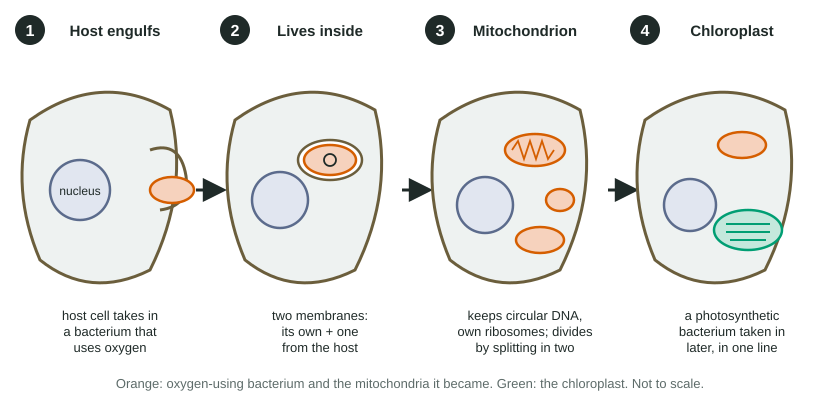

Origins of Cell Compartmentalization
Eukaryotic cells have membrane-bound organelles and prokaryotes generally do not.
Part 1 · Hook
Why this matters
Every mitochondrion in your body carries its own small loop of DNA, separate from the DNA in your nucleus, and builds some of its own proteins on its own ribosomes. Those ribosomes are so like bacterial ones that some antibiotics meant for bacteria can slow them down. The best explanation is startling: your mitochondria are the descendants of bacteria that moved into another cell long ago and never left.
Part 2 · Before you start
What this builds on
Part 3 · Prerequisite check
Quick check before you start
1. Which describes the mitochondrion?
- An organelle with a double membrane, its own DNA and its own ribosomes.
- An organelle with a single membrane and no DNA.
- A region of a prokaryote where its DNA is concentrated.
- A stack of flattened sacs that packages proteins.
Show the answer
Mitochondria have an outer membrane and a folded inner membrane, and they carry their own DNA and ribosomes, facts that matter a great deal in this topic.
- Correct: An organelle with a double membrane, its own DNA and its own ribosomes.:
- An organelle with a single membrane and no DNA.:
- A region of a prokaryote where its DNA is concentrated.:
- A stack of flattened sacs that packages proteins.:
2. How does a cell take in a large particle, such as a bacterium?
- By endocytosis: its membrane wraps around the particle and pinches off as a vesicle.
- Through a channel protein sized for the particle.
- By simple diffusion through the bilayer.
- By cotransport with sodium ions.
Show the answer
Large particles are brought in by bulk transport. The membrane surrounds the particle and pinches off, so the particle ends up inside a membrane sac.
- Correct: By endocytosis: its membrane wraps around the particle and pinches off as a vesicle.:
- Through a channel protein sized for the particle.:
- By simple diffusion through the bilayer.:
- By cotransport with sodium ions.:
3. What is the nucleoid?
- The region of a prokaryote where its DNA gathers, with no membrane around it.
- The membrane around a eukaryotic nucleus.
- A cluster of ribosomes in a eukaryotic cell.
- The inner membrane of a mitochondrion.
Show the answer
Prokaryotes have no nucleus; their DNA is concentrated in an unenclosed region, the nucleoid.
- Correct: The region of a prokaryote where its DNA gathers, with no membrane around it.:
- The membrane around a eukaryotic nucleus.:
- A cluster of ribosomes in a eukaryotic cell.:
- The inner membrane of a mitochondrion.:
Part 4 · See it
See it first

Part 5 · Step by step
How it works, step by step
- An ancestral host cell wrapped its membrane around a free-living, oxygen-using bacterium.The bacterium ended up inside the host, enclosed by its own plasma membrane plus a second membrane from the host: a double membrane.
- The bacterium was not digested; it kept living and dividing inside the host.The two lived in endosymbiosis: the host gained ATP, and the bacterium gained shelter and food (mutualism).
- Over many generations, most of the bacterium's genes were lost or moved into the host's nucleus.It could no longer live on its own and became an organelle, the mitochondrion, still with circular DNA, bacteria-like ribosomes and division by splitting.
- Later, in one line of these cells that already had mitochondria, a photosynthetic bacterium was taken in the same way.It became the chloroplast, which is why plants and algae have both organelles while animals and fungi have only mitochondria.
- Living mitochondria and chloroplasts still carry the marks of that history.Double membranes, circular DNA, bacteria-like ribosomes, fission and close DNA matches to living bacteria are the evidence for the endosymbiotic theory.
Part 6 · Key ideas
Key ideas
- Endosymbiosis: one organism living inside the cells of another. The endosymbiotic theory says mitochondria and chloroplasts began as free-living prokaryotes taken in by host cells.
- Four pieces of evidence to know: a double membrane, their own circular DNA, ribosomes like bacterial ones, and new ones forming only by splitting, like binary fission.
- Mitochondria came first (nearly all eukaryotes have them); chloroplasts came later in one branch (plants and algae).
- Prokaryotes generally have no membrane-bound organelles; eukaryotes have many. The nucleus and endomembrane system may have begun as infoldings of the plasma membrane, a hypothesis that is less settled than endosymbiosis.
- Evolution is change in the inherited traits of populations over generations; features shared because they were inherited from one ancestor are evidence of common ancestry.
Part 7 · Misconception
A common mistake
The wrong idea: Mitochondria and chloroplasts are bacteria that live inside our cells today.
What actually happens: They descend from bacteria, but they are now organelles. Most of their original genes have been lost or moved to the nucleus, they depend on the host for most of their proteins, and they cannot survive on their own.
Part 8 · Check yourself
Check yourself
Exam-style questions. Anything you miss goes into your review queue.
Data table
Comparing organelles with bacteria
Researchers compared a free-living bacterium, mitochondria and chloroplasts from a plant, and the cytoplasm of the same plant cells. Ribosome size is given in S units, a measure of how fast a particle settles in a centrifuge; larger particles have larger S values. In the last row, each sample was given streptomycin, a drug that binds bacterial ribosomes, and protein production was measured as a percent of untreated samples.
| Feature | Free-living bacterium | Mitochondrion | Chloroplast | Plant cell cytoplasm |
|---|---|---|---|---|
| Typical length (µm) | 1–5 | 1–10 | 3–10 | Whole cell: 10–100 |
| Shape of DNA | Circular | Circular | Circular | Chromosomes in the nucleus (not loops) |
| Ribosome size (S) | 70 | 70 to 78 | 70 | 80 |
| Membranes around it | 1 (plus a wall) | 2 | 2 | Not applicable |
| How new ones form | Binary fission | Splitting of existing ones | Splitting of existing ones | Cell division |
| Protein production with streptomycin (% of untreated) | 8 | 15 | 12 | 97 |
1. Which feature in the table do mitochondria share with bacteria but not with the plant cell's cytoplasm?
- Ribosomes of about 70 S, which streptomycin blocks
- Chromosomes that are not loops, held inside a nucleus
- A length of 10 to 100 micrometers, like the whole cell
- New ones forming by ordinary cell division
Show the answer
Bacteria and mitochondria both have ribosomes near 70 S, and streptomycin cuts protein production in both, while the cytoplasm's 80 S ribosomes are almost unaffected (97%).
- Correct: Ribosomes of about 70 S, which streptomycin blocks: Correct: ribosome size and sensitivity to streptomycin match the bacterium, not the cytoplasm.
- Chromosomes that are not loops, held inside a nucleus: Chromosomes in a nucleus belong to the host cell; mitochondria have circular DNA.
- A length of 10 to 100 micrometers, like the whole cell: That is the size of the whole plant cell; mitochondria are 1 to 10 µm, bacteria-sized.
- New ones forming by ordinary cell division: Mitochondria form only by splitting of existing mitochondria, like bacterial fission.
2. Why is the streptomycin row evidence for the endosymbiotic theory?
- A drug aimed at bacterial ribosomes also blocks the organelles' ribosomes, so theirs are bacteria-like.
- The drug kills mitochondria and chloroplasts, showing that they are separate living bacteria inside the cell today.
- Protein production in the cytoplasm is unaffected, showing that the cytoplasm came from a bacterium.
- Streptomycin enters organelles more easily than cytoplasm, showing that organelles have bacterial membranes.
Show the answer
Streptomycin works by fitting bacterial ribosomes. Its strong effect on mitochondria (15%) and chloroplasts (12%), and almost none on the 80 S cytoplasmic ribosomes (97%), shows the organelles' ribosomes are built like bacterial ones, as expected if they descend from bacteria.
- Correct: A drug aimed at bacterial ribosomes also blocks the organelles' ribosomes, so theirs are bacteria-like.: Correct: matching drug sensitivity points to matching ribosome structure, inherited from bacterial ancestors.
- The drug kills mitochondria and chloroplasts, showing that they are separate living bacteria inside the cell today.: The data measure protein production, not death; and mitochondria cannot live on their own as bacteria do.
- Protein production in the cytoplasm is unaffected, showing that the cytoplasm came from a bacterium.: The cytoplasm's ribosomes are unlike bacterial ones (80 S, unaffected), which points away from a bacterial origin for the host.
- Streptomycin enters organelles more easily than cytoplasm, showing that organelles have bacterial membranes.: The data say nothing about how easily the drug enters; the difference fits ribosome structure, which the S values confirm.
3. Some antibiotics that block bacterial ribosomes can cause side effects in human tissues when given at high doses for a long time. Based on the table, which tissues are most likely to be affected?
- Tissues whose cells have many mitochondria, such as heart muscle, because mitochondrial ribosomes are bacteria-like.
- Tissues whose cells have no mitochondria, such as mature red blood cells, because they depend on bacterial-type ribosomes.
- Tissues whose cells divide most often, because the drug blocks the 80 S ribosomes in their cytoplasm.
- Tissues whose cells are largest, because larger cells contain more of the bacterial ribosomes the drug binds.
Show the answer
Mitochondria make some of their own proteins on bacteria-like ribosomes. A drug that blocks bacterial ribosomes can slow that, and cells that depend most on mitochondria, such as heart and skeletal muscle and nerve cells, are hit hardest.
- Correct: Tissues whose cells have many mitochondria, such as heart muscle, because mitochondrial ribosomes are bacteria-like.: Correct: cells packed with mitochondria rely most on mitochondrial protein making.
- Tissues whose cells have no mitochondria, such as mature red blood cells, because they depend on bacterial-type ribosomes.: Cells with no mitochondria have no bacteria-like ribosomes at all, so the drug has nothing in them to block.
- Tissues whose cells divide most often, because the drug blocks the 80 S ribosomes in their cytoplasm.: The cytoplasm's 80 S ribosomes are barely affected (97%), so dividing cells are not the main target.
- Tissues whose cells are largest, because larger cells contain more of the bacterial ribosomes the drug binds.: The cytoplasm of large cells still has 80 S ribosomes; size alone does not add bacteria-like ribosomes.
4. Which observations are evidence that chloroplasts descend from bacteria? Select all that apply.
- Chloroplast DNA is circular.
- Chloroplast ribosomes are about 70 S.
- New chloroplasts form by splitting of existing ones.
- Chloroplasts are surrounded by two membranes.
- Chloroplasts are found in plant and algal cells but not in animal cells.
- Chloroplasts contain a green substance that absorbs light.
Show the answer
Evidence for a bacterial origin is a feature the chloroplast shares with bacteria, or one that engulfing would produce. Where chloroplasts occur and what they do are facts about their job and distribution, not their origin.
- Correct: Chloroplast DNA is circular.: Circular DNA matches bacteria and differs from the host's chromosomes in the nucleus.
- Correct: Chloroplast ribosomes are about 70 S.: Ribosomes near 70 S match bacterial ribosomes, not the host's 80 S ones.
- Correct: New chloroplasts form by splitting of existing ones.: Splitting of existing chloroplasts resembles binary fission; the cell cannot build them from scratch.
- Correct: Chloroplasts are surrounded by two membranes.: Two membranes fit a bacterial origin: in the engulfing model, the inner comes from the bacterium and the outer from the host membrane that wrapped around it.
- Chloroplasts are found in plant and algal cells but not in animal cells.: This tells you which organisms have chloroplasts, which bears on when they were gained, not on whether they came from bacteria.
- Chloroplasts contain a green substance that absorbs light.: The green substance explains what chloroplasts do; any photosynthetic structure would need something like it, whatever its origin.
5. By what percent did streptomycin reduce protein production in mitochondria?
Type a number in %.
Show the answer
Treated mitochondria made 15% as much protein as untreated ones, so production fell by 100 − 15 = 85%.
- Answer: 85 %
6. What does the endosymbiotic theory propose?
- Mitochondria and chloroplasts descend from free-living prokaryotes taken in by ancient host cells.
- The nucleus formed when a large bacterium was swallowed by a smaller one and kept its DNA.
- Mitochondria and chloroplasts formed from folds of the plasma membrane that pinched off inside the cell.
- Prokaryotes descend from eukaryotic cells that lost their nucleus and organelles over time.
Show the answer
The theory says two organelles, mitochondria and chloroplasts, began as prokaryotes living inside a host cell.
- Correct: Mitochondria and chloroplasts descend from free-living prokaryotes taken in by ancient host cells.: Correct: engulfed prokaryotes became mitochondria and, later in one line, chloroplasts.
- The nucleus formed when a large bacterium was swallowed by a smaller one and kept its DNA.: The theory is about mitochondria and chloroplasts, not the nucleus.
- Mitochondria and chloroplasts formed from folds of the plasma membrane that pinched off inside the cell.: Membrane infolding is a separate hypothesis for the nucleus and endomembrane system; it does not explain the double membranes, DNA and ribosomes of these two organelles.
- Prokaryotes descend from eukaryotic cells that lost their nucleus and organelles over time.: Prokaryote fossils are far older than eukaryote fossils; eukaryotes arose from prokaryotes, not the reverse.
7. A student says, "Mitochondria are just bacteria that live in our cells today." Which evidence best shows this claim goes too far?
- Mitochondria cannot survive outside a cell, and most of their proteins are coded by genes in the nucleus.
- Mitochondria have two membranes, circular DNA and ribosomes that resemble bacterial ribosomes in size and drug sensitivity.
- Mitochondria divide by splitting, the way bacteria divide by binary fission.
- Mitochondria are about the same size as many bacteria, 1 to 10 micrometers long.
Show the answer
Mitochondria descend from bacteria but are no longer independent organisms: they depend on the host for most of their proteins and cannot live outside the cell.
- Correct: Mitochondria cannot survive outside a cell, and most of their proteins are coded by genes in the nucleus.: Correct: dependence on the host shows they are now organelles, not free bacteria.
- Mitochondria have two membranes, circular DNA and ribosomes that resemble bacterial ribosomes in size and drug sensitivity.: These features show bacterial ancestry, which supports the student rather than limiting the claim.
- Mitochondria divide by splitting, the way bacteria divide by binary fission.: Dividing like bacteria fits the student's claim; it does not show where it goes too far.
- Mitochondria are about the same size as many bacteria, 1 to 10 micrometers long.: Similar size fits a bacterial origin; it does not show the difference between an organelle and a living bacterium.
Part 9 · Summary
Summary
Eukaryotic cells have membrane-bound organelles and prokaryotes generally do not. Two of those organelles have an unusual history: by the endosymbiotic theory, mitochondria and chloroplasts descend from free-living prokaryotes taken in by ancestral host cells, first an oxygen-using bacterium and later, in one line, a photosynthetic one. Evidence: double membranes, their own circular DNA, bacteria-like ribosomes, division by a fission-like process and DNA that matches living bacteria. The nucleus and endomembrane system may have formed by infolding of the plasma membrane, a less settled hypothesis.
Part 10 · Up next
What comes next
Part 11 · Connections